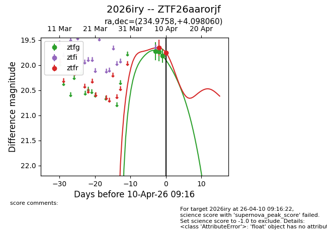
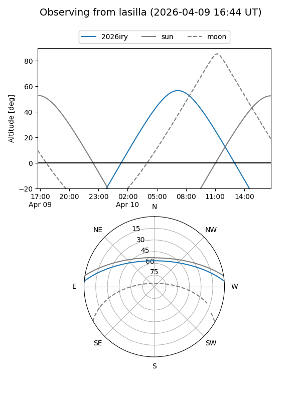
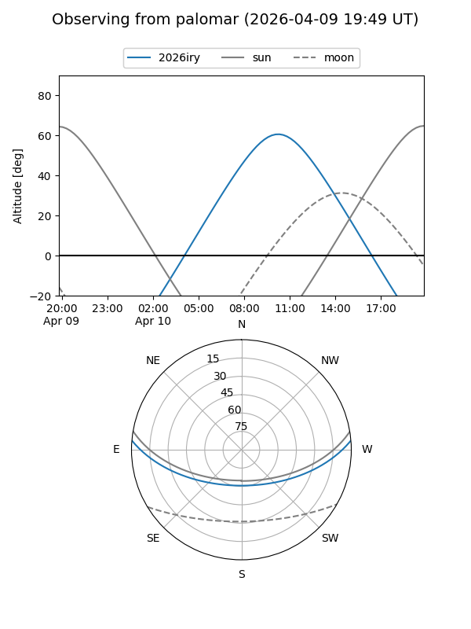
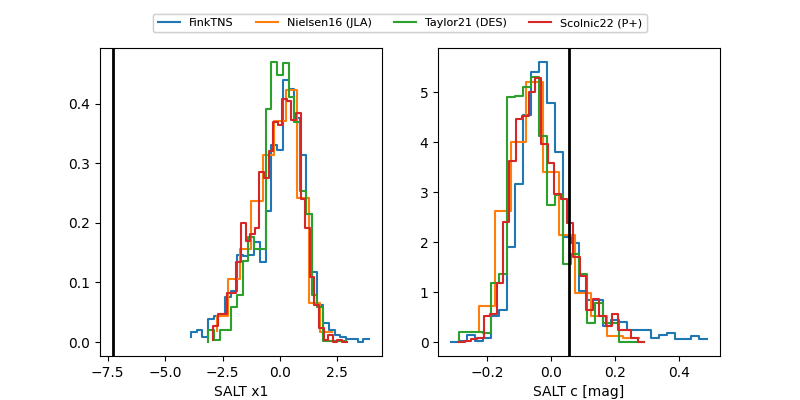

2026iry
Target 2026iry at 2026-04-10 09:23
Aliases and brokers:
FINK: link
Lasair: link
ALeRCE: link
TNS: link
YSE: link
alt names
ZTF26aarorjf (ztf,fink_ztf)
2026iry (tns,yse)
Coordinates:
equatorial (ra, dec) = 234.9758,+4.09806
equatorial (HMS+DMS) = 15:39:54.20,+04:05:53.02
galactic (l, b) = (10.6738,+43.71546)
Flags:
Photometry:
last ztfg=19.81, ztfr=19.75
3 ztfg, 2 ztfr detections
Lightcurve

Visibility


Additional plots
